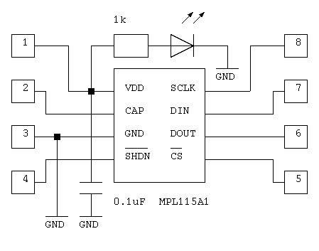
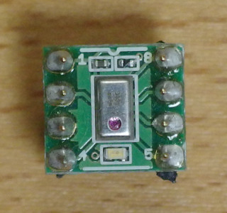
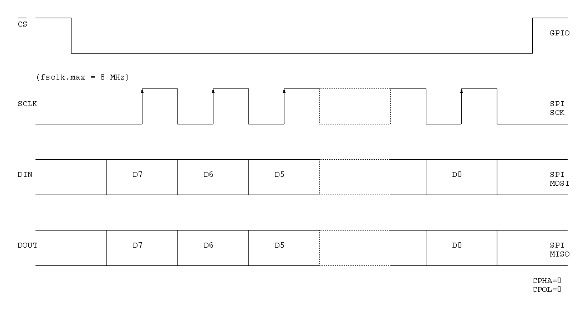
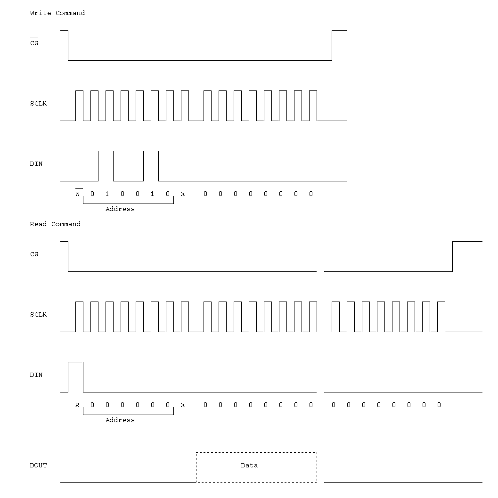

Freescale MPL115A1
The MPL115A1 is an absolute pressure sensor. It has an SPI interface.


SPI interface

| Address | Name | Description |
|---|---|---|
| 0x00 | Padc_MSB | 10-bit Pressure ADC output value MSB |
| 0x01 | Padc_LSB | 10-bit Pressure ADC output value LSB |
| 0x02 | Tadc_MSB | 10-bit Temperature ADC output value MSB |
| 0x03 | Tadc_MSB | 10-bit Temperature ADC output value LSB |
| 0x04 | a0_MSB | a0 coefficient MSB |
| 0x05 | a0_LSB | a0 coefficient LSB |
| 0x06 | b1_MSB | b1 coefficient MSB |
| 0x07 | b1_LSB | b1 coefficient LSB |
| 0x08 | b2_MSB | b2 coefficient MSB |
| 0x09 | b2_LSB | b2 coefficient LSB |
| 0x0a | c12_MSB | c12 coefficient MSB |
| 0x0b | c12_LSB | c12 coefficient LSB |
| 0x0c | Reserved | |
| 0x0d | Reserved | |
| 0x0e | Reserved | |
| 0x0f | Reserved | |
| 0x10 | Reserved | |
| 0x11 | Reserved | |
| 0x12 | CONVERT | Start Pressure and Temperature Conversion |

Compensation
a0 = S I11 – I0 . F2 – F0
b1 = S I1 I0 . F12 – F0
b2 = S I0 . F13 – F0
c12 = S 0.000 000 000 F12 – F0
Padc = I9 – I0
Tadc = I9 – I0
Pcomp = a0 + (b1 + c12 × Tadc) × Padc + b2 × Tadc
Pressure(kPa) = Pcomp × ((115 - 50) / 1023) + 50